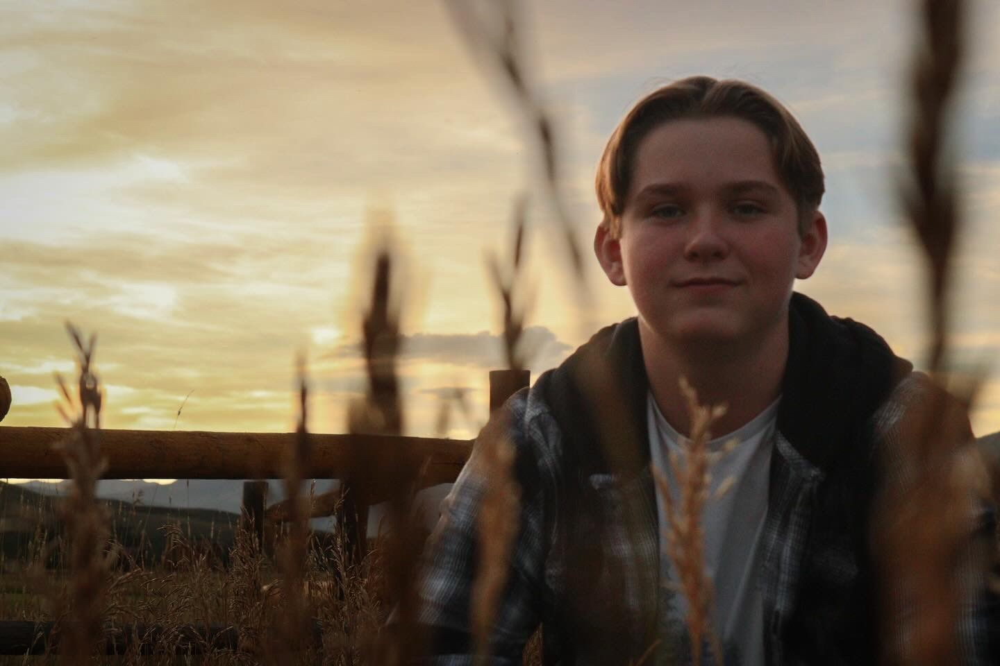

About Me

My name is Dylan Wheeler. I was born and raised in Gunnison Colorado and I am currently a sophomore attending Western Colorado University. I have not declared a major yet, but plan on getting an art minor in photography. My favorite thing to photograph are sunsets. I mostly do landscapes, nature, astonomy, and animals. I plan on working on portraits and learning new ways to enhance my photography. I mainly use my IPhone 13 Pro Max for most of the photos I take. I also use a Sony Cyber-shot DSC-HX400V digital camera.